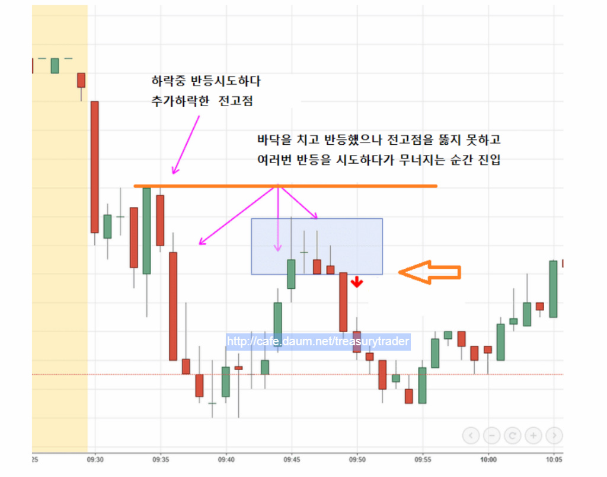
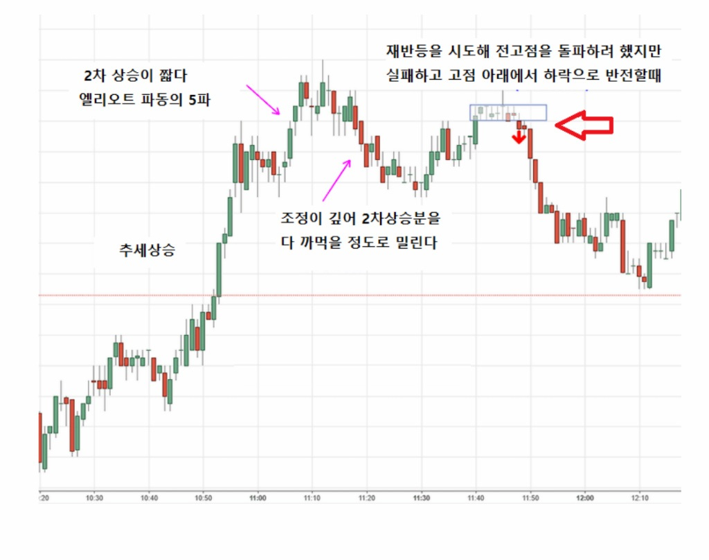
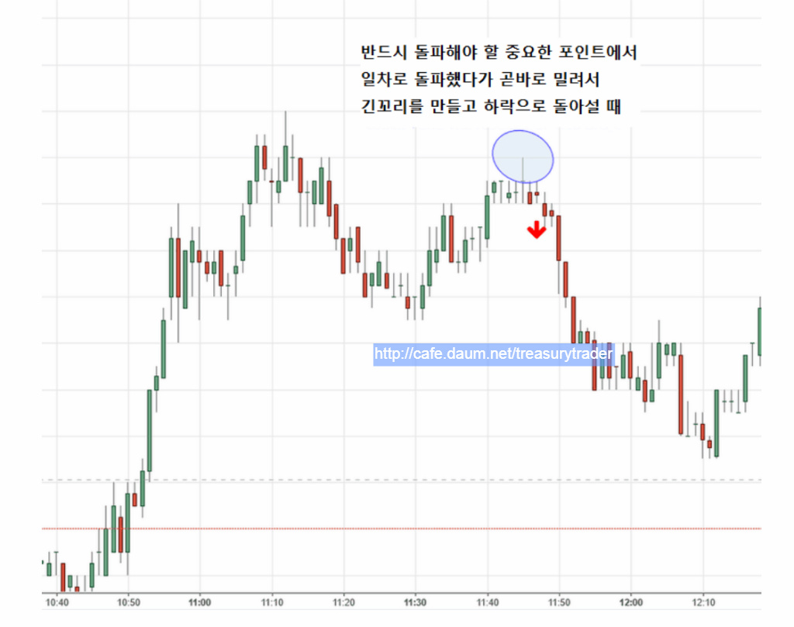

선물시장에서 통하는 매매기법은 매우 단순함
- 챠트패턴(짝궁뎅이 쌍봉 쌍바닥)
- N자형 눌림목 반등.
- 주요 피봇 지지(저항)에서 나타나는 중요한 캔들패턴(추세전환? 계속진행?)
- 주가의 중요한 이평선 관통(주가와 이평선의 골든크로스 데드크로스)
위에 열거한 사항들이 매매에서 99%임.
뭐 대단한 필살기가 있을까 싶어서 여기저기 뒤져봐야 증시 생긴 이레로 이것외엔 없음
카페에 소개하는 매매기법들은 위에 열거한 것들의 실전 응용임
계속해서 연습해서 장중에서 나타나는 매매신호를 놓치지 않는것과
정확한 타이밍에 들어가고 나오는것을 연습해서 숙달하는것 외에 성공할 다른 방법은 없음
그리고 가능하면 분봉보다는 틱챠트를 쓰는게 정확도가 높음
장이 급하게 움직일 때 분봉은 그냥 장대봉만 계속 만들고 있어
매매타이밍을 잡을 수가 없고 좋은 매매기회(급한 장세의 눌림목)를 다 날려보냄

*** 진행하던 주가가 중요 지지(저항)에서 도지나 긴꼬리나 작은 캔들이 많이 생기는 구간을 주목해야 함
특히 몸통보다 세배이상 꼬리가 긴 Pin Bar가 나타나면 신뢰도가 매우 높은 단기 추세 전환신호임 ***

